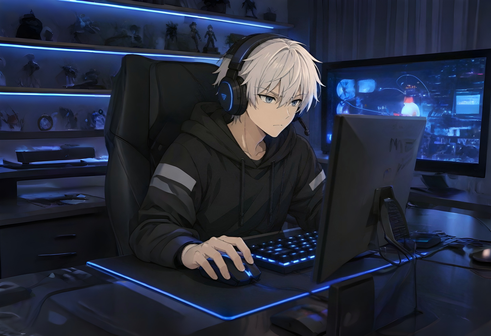
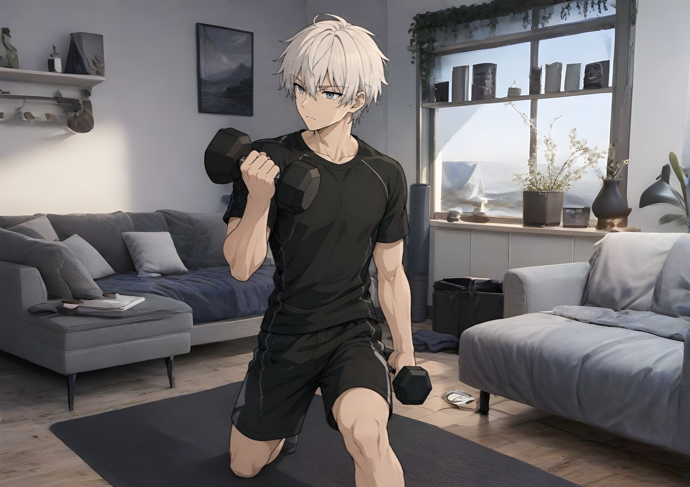

Игры и виртуальные миры
Игры для меня — это отличный способ переключиться, расслабиться после тяжелого дня и просто круто провести время. Люблю залипнуть в хороший тайтл на телефоне, консоли или ПК. Будь то динамичные сетевые матчи, где нужно показать реакцию, или одиночные сюжетные прохождения — для меня это хобби, которое реально затягивает.

Полезные ресурсы для геймеров (Внешние источники)
Спорт и тренировки дома
Чтобы держать себя в отличной форме, мне не нужны душные фитнес-клубы и трата времени на дорогу. Я предпочитаю заниматься дома, на своей территории и в своем темпе. Будь то отжимания, работа с собственным весом или базовые упражнения на тонус — домашний спорт помогает мне оставаться заряженным, бодрым и дисциплинированным.

Мои базовые упражнения (Неупорядоченный список)
- Классические и алмазные отжимания от пола.
- Приседания и выпады для выносливости.
- Планка на время для укрепления кора.